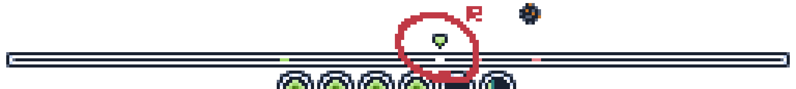
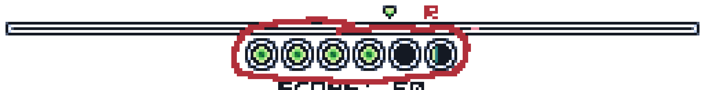
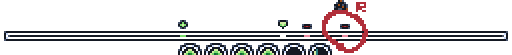
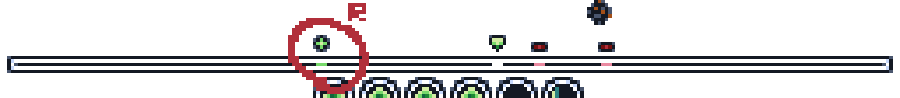
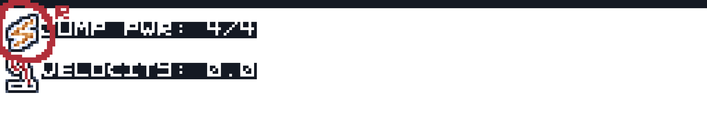
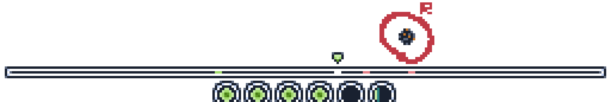
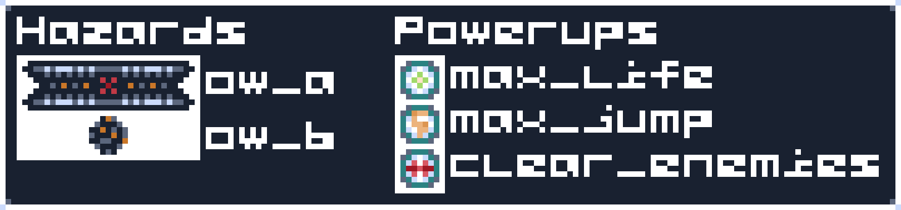
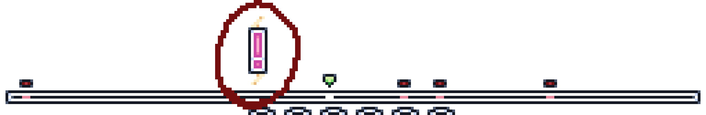
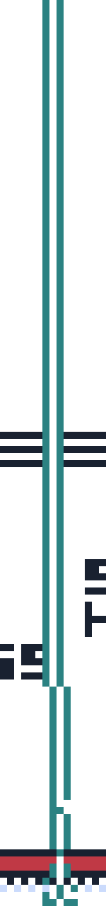
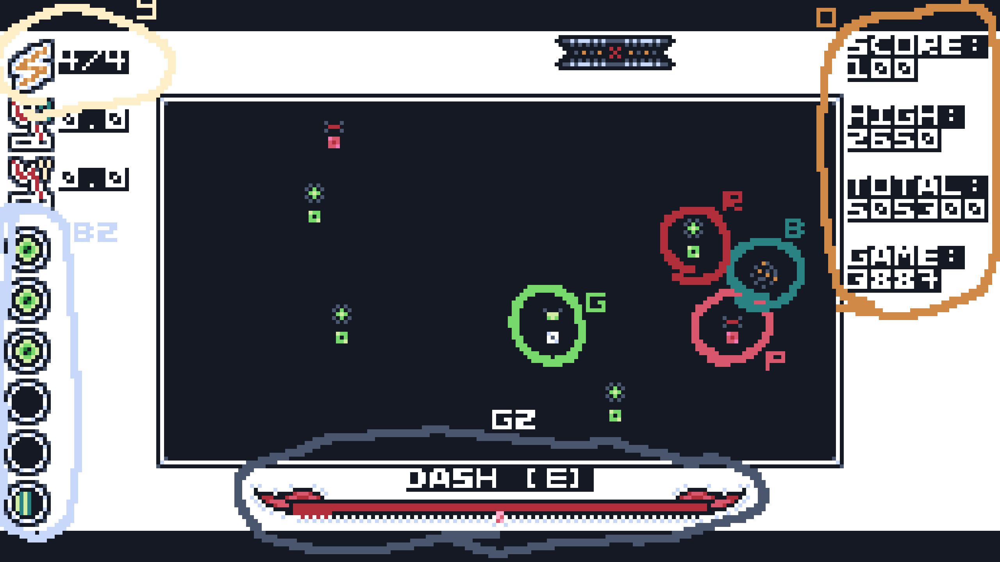

These are all based on the in-game "HTP Themes" (how-to-play themes).
These are not built for readability; they are just novelty looks for fun :P
The default is "White-on-Black (Dark)".
Note that this is not word-for-word the exact in-game how to play screen,
but it is an arguably better how to play screen.
This will soon be the new how to play screen, as v1.1 replaces the how to play screen
with a link to this website.
Table of Contents
Note: Some of the images here have ever-so-slightly messed up colours. I am not sure why, and quite frankly, I don't care, but I do want to point it out regardless.
General Gameplay & 1D Mode
In 1D Mode, you are playing on a line. You can only move left and right. If you want a general understanding of this game's gameplay, see the Gameplay section on the home page. Do note, that section will not explain how to play; that is the job of this page. If your goal is to find out how to play this game, you have come to the right place.

In the red circle / the circle marked by the letter
In gameplay, you can use [A] to move left, and [D]
to move right. These keys cannot yet be changed.
You can also hold [S] to slow down. This is not useless; it is
used to help precision when trying to get something such as a heal or
power-up while avoiding enemies or other hazards.

This is your life. It starts at, and has a maximum of, 5. Each green orb represents a health point.
In gameplay, you may, and should, notice that you are constantly losing these orbs.
On the far right of your health bar is the time orb;
it shows how long you have until your next health point decreases. This interval is 2 seconds.
Note: You can pause by pressing [ESCAPE].

This is an enemy. They spawn in random positions and at random times.
You must avoid running into them, as doing so decreases your health.
Once hit by one, you have 10 ticks (~1/3 second) of invincibility
(indicated by a red shield at the top of the screen).
If indicators are enabled in settings, then these enemies will be marked above them by a red minus sign
(-).

This is a heal; it is the only thing keeping you alive.
They spawn in random positions and at random times, just like enemies.
Running into them will increase your health by one health point.
If indicators are enabled in settings, then these heals will be marked above them by a green plus sign
(+).
This is your game info. Evidently, by the text, it tells you your
score, high score, total score, and game.
For clarification on the second two terms:
- Total score is the sum of all of the scores you have ever had.
- Game is how many games (as in, Lifeline.PYR runs) you have played.

This is your jump charge. Once it reaches its full capacity of 4/4 (which it also starts at),
you may perform a jump by pressing [W].
This gives you 2 seconds of invincibility, however, you cannot collect heals during this.
It is useful to avoid enemies that are in the way of heals.
You can stop this jump early by pressing [S].
The jump charge takes 10 seconds to recharge.
Note: You cannot slow down while jumping. This is why slow down and stop jump are both [S].
This is your dash bar. It ranges from 0 to 106 (because 106 is how many pixels wide it is,
and it was convenient to develop it that way).
You can use your dash by holding [E]. You will then be able to go ~2.5x faster
than your normal speed while you hold [E].
However, it only takes ~1/3 second for your dash to run out,
and it will then take 5 seconds to recharge.
Dash will not work if the charge is under 10 (which is marked by the red part of the
bottom border).

This is a falling object. They spawn randomly at the top of your screen and fall down.
There are 5 varieties of them, 2 of which are hazards and 3 of which are power-ups.

To help read: top-to-bottom-left-to-right, ow_a, ow_b, max_life, max_jump, clear_enemies)
Here is what all of these falling objects do:
- Hazards (ow_a, ow_b) kill you instantly on contact, so you must avoid them.
- max_life restores your health to the maximum of 5.
- max_jump instantly charges your jump charge to maximum capacity (4/4).
- clear_enemies gets rid of all current enemies (it does not stop more from spawning).

This is a laser warning. It appears at random times and it serves to, well, warn you of a laser.
Here be no dragons; it cannot hurt you on its own.
In ~3 seconds (2 2/3)
a laser will strike where the warning is. If you failed to get out of the way in time,
you will die instantly. If you touch the laser, you will also die instantly.
After another ~3 seconds (3 1/3),
the laser will disappear.
Below is a picture of a laser. I waited until now to show it because the image is rather large,
and I do apologise for that, though I don't want to fix it.

Congratulations! You can now play Lifeline.PYR's 1D Mode, at least presumably.
Or you could read the guide for 2D Mode?
2D Mode
If you have not read the guide for 1D Mode, do that. This guide assumes you have already read that.
2D Mode uses the same gameplay as 1D mode, but instead of playing on a line (which is actually called a bar, technically,
not even I knew that), you are playing on a 2D "field". It also changes some controls because 2D movement is greedy
and stole the [S] and [W] keys (not literally, but you get the joke); more on that later.

Various things here are circled with letters next to them to showcase the 2D Mode UI. Here is what they all are:
- Tan circle (letter
Y ): Jump charge; in the exact same place as in 1D Mode. - Grey circle (letter
G2 ): Dash bar; also in the exact same place as in 1D Mode. - Sky blue circle (letter
B2 ): Life. Now sideways! - Green circle (letter
G ): Player. Now a square instead of a line. Do note that the arrow's texture is slightly messed up in this image, I'm not sure why. In-game, it looks the same as in 1D Mode. - Red circle (letter
R ): A heal, also a square now. - Pink circle (letter
P ): An enemy, also also a square now. - Blue circle (letter
B ): A falling object. They fall just like in 1D Mode, but now you also have a Y axis. - Orange circle (letter
O ): Your game info, now in the top-left because the 2D Mode field is hungry for space.
Here are the keybindings in 2D Mode:
| Move up | [W] |
|---|---|
| Move down | [S] |
| Jump | [↑] (up arrow) |
| Stop jump | [↓] (down arrow) |
| Slow | [↓] (down arrow) |
Here are the rest of the keybindings, which are not different, but this is for a refresher.
| Move left | [A] |
|---|---|
| Move right | [D] |
| Dash | [E] |
| Pause | [ESCAPE] |
That's all! Not really much to cover here.
Goodbye, and consider playing 2D Mode to put your new knowledge to use.
Have fun! :3
Site licensed under the CC-BY-SA 4.0 (Creative Commons Attribution-ShareAlike 4.0).